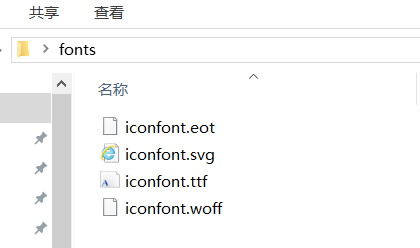

CSS高级技巧
元素的显示和隐藏
在CSS中有三个显示和隐藏的单词比较常见，我们要区分开，他们分别是 display visibility 和 overflow。
他们的主要目的是让一个元素在页面中消失，但是不在文档源码中删除。 最常见的是网站广告，当我们点击类似关闭不见了，但是我们重新刷新页面，它们又会出现和你玩躲猫猫！！
display显示
display 设置或检索对象是否及如何显示。
display : none 隐藏对象 与它相反的是 display:block 除了转换为块级元素之外，同时还有显示元素的意思。
特点： 隐藏之后，不再保留位置。
visibility可见性
设置或检索是否显示对象。
visible : 对象可视
hidden : 对象隐藏
特点： 隐藏之后，继续保留原有位置。
overflow溢出
检索或设置当对象的内容超过其指定高度及宽度时如何管理内容。
visible : 不剪切内容也不添加滚动条。
auto : 超出自动显示滚动条，不超出不显示滚动条
hidden : 不显示超过对象尺寸的内容，超出的部分隐藏掉
scroll : 不管超出内容否，总是显示滚动条
CSS用户界面样式
所谓的界面样式， 就是更改一些用户操作样式， 比如 更改用户的鼠标样式， 表单轮廓等。但是比如滚动条的样式改动受到了很多浏览器的抵制，因此我们就放弃了。 防止表单域拖拽
鼠标样式cursor
设置或检索在对象上移动的鼠标指针采用何种系统预定义的光标形状。
1 | cursor : default 小白 | pointer 小手 | move 移动 | text 文本 |
这几个属性是最常用的
1 | <ul> |
轮廓outline
轮廓就是绘制于元素周围的一条线，位于边框边缘的外围，可起到突出元素的作用。
比如输入框或者文本域中的鼠标放进去时，chrome浏览器会在周围显示蓝色。这条蓝色边线就是轮廓线
1 | outline : outline-color ||outline-style || outline-width |
但是我们都不关心可以设置多少，我们平时都是去掉的。
最直接的写法是 ： outline: 0; 或者 outline: none;
1 | <input type="text" style="outline: 0;"/> |
防止拖拽文本域resize
resize：none 这个单词可以防止 火狐 谷歌等浏览器随意的拖动 文本域。
默认的文本域右下角可以拖拽：
右下角不可以拖拽：
1 | <textarea style="resize: none;"></textarea> |
vertical-align 垂直对齐
以前我们讲过让带有宽度的块级元素居中对齐，是margin: 0 auto;
以前我们还讲过让文字居中对齐，是 text-align: center;
但是我们从来没有讲过有垂直居中的属性， 我们的妈妈一直很担心我们的垂直居中怎么做。
vertical-align 垂直对齐， 这个看上去很美好的一个属性， 实际有着不可捉摸的脾气.

1 | vertical-align : baseline |top |middle |bottom |
设置或检索对象内容的垂直对其方式。
vertical-align 不影响块级元素中的内容对齐，它只针对于 行内元素或者行内块元素，特别是行内块元素， 通常用来控制图片/表单与文字的对齐

图片、表单和文字对齐
所以我们知道，我们可以通过vertical-align 控制图片和文字的垂直关系了。 默认的图片会和文字基线对齐。
如下：
可以看到文字底部超出文本域底部一部分了
去除图片底侧空白缝隙
有个很重要特性你要记住： 图片或者表单等行内块元素，他的底线会和父级盒子的基线对齐。这样会造成一个问题，就是图片底侧会有一个空白缝隙(无论有没有文字，所以做项目时CSS初始化时会去掉这个缝隙)。
解决的方法就是：
1.给img vertical-align:middle | top等等。 让图片不要和基线对齐。

2.给img 添加 display：block; 转换为块级元素就不会存在问题了。

溢出的文字隐藏
强制单行white-space
white-space设置或检索对象内文本显示方式。通常我们使用于强制一行显示内容
normal : 默认处理方式
nowrap : 强制在同一行内显示所有文本，直到文本结束或者遭遇br标签对象才换行。
可以处理中文
如：给li标签设置了宽度，当文本过长时会到下一行
text-overflow 文字溢出
1 | text-overflow : clip | ellipsis |
设置或检索是否使用一个省略标记（…）标示对象内文本的溢出
clip : 不显示省略标记（…），而是简单的裁切
ellipsis : 当对象内文本溢出时显示省略标记（…）
注意一定要首先强制一行内显示，再次和overflow属性 搭配使用
文本过长单行显示并显示省略号
这样的需求很常见，一般要用到下面的代码，三个属性必不可少
1 | li{ |
CSS精灵技术（sprite）
精灵技术产生的背景

图所示为网页的请求原理图，当用户访问一个网站时，需要向服务器发送请求，网页上的每张图像都要经过一次请求才能展现给用户。
然而，一个网页中往往会应用很多小的背景图像作为修饰，当网页中的图像过多时，服务器就会频繁地接受和发送请求，这将大大降低页面的加载速度。为了有效地减少服务器接受和发送请求的次数，提高页面的加载速度，出现了CSS精灵技术（也称CSS Sprites、CSS雪碧）。
精灵技术本质
简单地说，CSS精灵是一种处理网页背景图像的方式。它将一个页面涉及到的所有零星背景图像都集中到一张大图中去，然后将大图应用于网页，这样，当用户访问该页面时，只需向服务发送一次请求，网页中的背景图像即可全部展示出来。
通常情况下，这个由很多小的背景图像合成的大图被称为精灵图（雪碧图），如下图所示为京东网站中的一个精灵图。

精灵技术的使用
CSS 精灵其实是将网页中的一些背景图像整合到一张大图中（精灵图），然而，各个网页元素通常只需要精灵图中不同位置的某个小图，要想精确定位到精灵图中的某个小图，就需要使用CSS的background-image、background-repeat和background-position属性进行背景定位，其中最关键的是使用background-position属性精确地定位。
如下图是我从LOL官网找到的一张精灵图
首先用PS把这张图片打开，默认会将这张图片定位到原点坐标上。需要展示精灵图上的某张小图，只需要选中该图，或者用辅助线确定好该图的边线。按下F8，右侧会出现当前鼠标所在的坐标。
如下图
确定了x坐标，在用鼠标选中图片的顶侧，查看Y坐标。这样就可以通过background-position属性去定位该图了。
因为给标签设置背景图默认都是以左上角对齐的，我们知道了目标切图距离左上角的坐标，就可以确定了
1 | div { |
这里是负值，我们需要目标图往左移动，所以是负的
精灵图的制作
CSS 精灵其实是将网页中的一些背景图像整合到一张大图中（精灵图），那我们要做的，就是把小图拼合成一张大图。
大部分情况下，精灵图都是网页美工做。
1 | 我们精灵图上放的都是小的装饰性质的背景图片。 插入图片不能往上放。 |
小公司，背景图片很少的情况，没有必要使用精灵技术，维护成本太高。 如果是背景图片比较多，可以建议使用精灵技术。
滑动门
滑动门出现的背景
制作网页时，为了美观，常常需要为网页元素设置特殊形状的背景，比如微信导航栏，有凸起和凹下去的感觉，最大的问题是里面的字数不一样多，咋办？

为了使各种特殊形状的背景能够自适应元素中文本内容的多少，出现了CSS滑动门技术。它从新的角度构建页面，使各种特殊形状的背景能够自由拉伸滑动，以适应元素内部的文本内容，可用性更强。 最常见于各种导航栏的滑动门。
核心技术原理
核心技术就是利用CSS精灵（主要是背景位置）和盒子padding撑开宽度, 以便能适应不同字数的导航栏。
一般的经典布局都是这样的：
1 | <li> |
样式如下：
1 | /*a的高度就是背景图的高度，a是行内元素所以要有高度必须模式转换，又要和span在一行，而span也要有高度，所以必须是行内块。a设置背景，默认和图左上角对齐， |
使用的背景图
总结：
- a 设置 背景左侧，padding撑开合适宽度。
- span 设置背景右侧， padding撑开合适宽度 剩下由文字继续撑开宽度。
- 之所以a包含span就是因为 整个导航都是可以点击的。
所以这种方式有个缺陷就是当文字超出了图片宽度时，就露馅了，会出现两张背景图。
Web字体
字体格式（了解）
不同浏览器所支持的字体格式是不一样的，我们有必要了解一下有关字体格式的知识。
1、TureType(.ttf)格式
.ttf字体是Windows和Mac的最常见的字体，是一种RAW格式，支持这种字体的浏览器有IE9+、Firefox3.5+、Chrome4+、Safari3+、Opera10+、iOS Mobile、Safari4.2+；
2、OpenType(.otf)格式
.otf字体被认为是一种原始的字体格式，其内置在TureType的基础上，支持这种字体的浏览器有Firefox3.5+、Chrome4.0+、Safari3.1+、Opera10.0+、iOS Mobile、Safari4.2+；
3、Web Open Font Format(.woff)格式
woff字体是Web字体中最佳格式，他是一个开放的TrueType/OpenType的压缩版本，同时也支持元数据包的分离，支持这种字体的浏览器有IE9+、Firefox3.5+、Chrome6+、Safari3.6+、Opera11.1+；
4、Embedded Open Type(.eot)格式
.eot字体是IE专用字体，可以从TrueType创建此格式字体，支持这种字体的浏览器有IE4+；
5、SVG(.svg)格式
.svg字体是基于SVG字体渲染的一种格式，支持这种字体的浏览器有Chrome4+、Safari3.1+、Opera10.0+、iOS Mobile Safari3.2+；
了解了上面的知识后，我们就需要为不同的浏览器准备不同格式的字体，通常我们会通过字体生成工具帮我们生成各种格式的字体，因此无需过于在意字体格式间的区别差异。
图标字体
图片是有诸多优点的，但是缺点很明显，比如图片不但增加了总文件的大小，还增加了很多额外的”http请求”，这都会大大降低网页的性能的。更重要的是图片不能很好的进行“缩放”，因为图片放大和缩小会失真。 我们后面会学习移动端响应式，很多情况下希望我们的图标是可以缩放的。此时，一个非常重要的技术出现了，额不是出现了，是以前就有，是被从新”宠幸”啦。。 这就是图标字体（iconfont).
优点
可以做出跟图片一样可以做的事情,改变透明度、旋转度，等..
但是本质其实是文字，可以很随意的改变颜色、产生阴影、透明效果等等…
本身体积更小，但携带的信息并没有削减。
几乎支持所有的浏览器
移动端设备必备良药…
字体图标使用流程
总体来说，字体图标按照如下流程：

设计字体图标
假如图标是我们公司单独设计，那就需要第一步了，这个属于UI设计人员的工作， 他们在 illustrator 或 Sketch 这类矢量图形软件里创建 icon图标， 比如下图：

之后保存为svg格式，然后给我们前端人员就好了。
其实第一步，我们不需要关心，只需要给我们这些图标就可以了，如果图标是大众的，网上本来就有的，可以直接跳过第一步，进入第三步。
上传生成字体包
当UI设计人员给我们svg文件的时候，我们需要转换成我们页面能使用的字体文件， 而且需要生成的是兼容性的适合各个浏览器的。
推荐网站： http://icomoon.io
icomoon字库
IcoMoon成立于2011年，推出的第一个自定义图标字体生成器，它允许用户选择他们所需要的图标，使它们成一字型。 内容种类繁多，非常全面，唯一的遗憾是国外服务器，打开网速较慢。
推荐网站： http://www.iconfont.cn/
阿里icon font字库
这个是阿里妈妈M2UX的一个icon font字体图标字库，包含了淘宝图标库和阿里妈妈图标库。可以使用AI制作图标上传生成。 一个字，免费，免费！！
fontello
在线定制你自己的icon font字体图标字库，也可以直接从GitHub下载整个图标集，该项目也是开源的。
Font-Awesome
http://fortawesome.github.io/Font-Awesome/
这是我最喜欢的字库之一了，更新比较快。目前已经有369个图标了。
Glyphicon Halflings
这个字体图标可以在Bootstrap下免费使用。自带了200多个图标。
Icons8
提供PNG免费下载，像素大能到500PX
如下是上传到icomoon字库里

当点击import icons后，会弹出对话框让我们选择上传的svg图片。选择后，网站就会自动生成相应的图标字体。然后点击下载就可以了。
下载兼容字体包
刚才上传完毕， 网站会给我们把UI做的svg图片转换为我们的字体格式， 然后下载下来就好了
当然，我们不需要自己专门的图标，是想网上找几个图标使用，以上2步可以直接省略了， 直接到刚才的网站上找喜欢的下载使用吧。


字体引入到HTML
得到压缩包之后，最后一步，是最重要的一步了， 就是字体文件已经有了，我们需要引入到我们页面中。
首先把 以下4个文件放入到 fonts文件夹里面。 通俗的做法

第一步：在样式里面声明字体：
1 | @font-face { |
这段代码其实就是在下载后的文件里的styles.css文件中
第二步：给标签指明使用字体
1 | span { |
第三步：盒子里面添加结构
1 | span::before { |
追加新图标到原来库里面
如果工作中，原来的字体图标不够用了，我们需要添加新的字体图标，但是原来的不能删除，继续使用，此时我们需要这样做
把压缩包里面的selection.json 从新上传，然后，选中自己想要新的图标，从新下载压缩包，替换原来文件即可。

ICO图标
ico是Icon file的缩写，是Windows的图标文件格式的一种。一般作为浏览器首段图标显示，在浏览器收藏夹内收藏内容的前段显示小图标。
一般所有的网站首页后面可以加上”/favicon.ico”就可以找到该网站的ico图标了
比如京东https://www.jd.com/favicon.ico
引入ICO图标
1 | <link rel="shortcut icon" href="favicon.ico" type="image/x-icon"/> |
这里必须要把这个ico图标放到项目的根目录下！
网站优化三大标签
SEO是由英文Search Engine Optimization缩写而来， 中文意译为“搜索引擎优化”！SEO是指通过对网站进行站内优化、网站结构调整、网站内容建设、网站代码优化等)和站外优化，从而提高网站的关键词排名以及公司产品的曝光度。 简单的说就是，把产品做好，搜索引擎就会介绍客户来。
我们现在阶段主要进行站内优化

网页标题(title)
title具有不可替代性，是我们的内页第一个重要标签，是搜索引擎了解网页的入口，和对网页主题归属的最佳判断点。

建议：
首页标题：网站名（产品名）- 网站的介绍
例如：
京东(JD.COM)-综合网购首选-正品低价、品质保障、配送及时、轻松购物！
小米商城 - 小米5s、红米Note 4、小米MIX、小米笔记本官方网站
网站说明(Description)
对于关键词的作用明显降低，但由于很多搜索引擎，仍然大量采用网页的MATA标签中描述部分作为搜索结果的“内容摘要”。 就是简要说明我们网站的主要做什么的。
我们提倡，Description作为网站的总体业务和主题概括，多采用“我们是…”“我们提供…”“×××网作为…”“电话：010…”之类语句。
网页添加了description,搜索引擎会在搜索结果里展示
京东网：
1 | <meta name="description" content="京东JD.COM-专业的综合网上购物商城,销售家电、数码通讯、电脑、家居百货、服装服饰、母婴、图书、食品等数万个品牌优质商品.便捷、诚信的服务，为您提供愉悦的网上购物体验!" /> |
注意点：
- 描述中出现关键词，与正文内容相关，这部分内容是给人看的，所以要写的很详细，让人感兴趣， 吸引用户点击。
- 同样遵循简短原则，字符数含空格在内不要超过 120 个汉字。
- 补充在 title 和 keywords 中未能充分表述的说明.
- 用英文逗号 关键词1,关键词2
关键字(Keywords )
Keywords是页面关键词，是搜索引擎关注点之一。Keywords应该限制在6～8个关键词左右，电商类网站可以多 少许。
京东网：
1 | <meta name="Keywords" content="网上购物,网上商城,手机,笔记本,电脑,MP3,CD,VCD,DV,相机,数码,配件,手表,存储卡,京东" /> |
项目目录结构
要实现结构和样式相分离的设计思想。 根目录下有这4个文件（目录）。
| 名称 | 说明 |
|---|---|
| css | 用于存放CSS文件 |
| images | 用于存放图片 |
| index | 首页 HTML |
| js | 存放javascript文件 |
logo布局的写法
logo一般网页都是下面的写法
1 | <div class="logo"> |
样式如下:
1 | .logo a { |
CSS的初始化
css reset就是CSS的初始化，很多标签的样式都会有兼容性问题。所以为了解决这个问题，就需要CSS的初始化，让各个浏览器的样式统一。
normalize.css库
normalize.css 只是一个很小的CSS文件，但它在默认的HTML元素样式上提供了跨浏览器的高度一致性。相比于传统的CSS reset，Normalize.css是一种现代的、为HTML5准备的优质替代方案。Normalize.css现在已经被用于Twitter Bootstrap、HTML5 Boilerplate、GOV.UK、Rdio、CSS Tricks 以及许许多多其他框架、工具和网站上。
保护有用的浏览器默认样式而不是完全去掉它们
一般化的样式：为大部分HTML元素提供
修复浏览器自身的bug并保证各浏览器的一致性
优化CSS可用性：用一些小技巧
解释代码：用注释和详细的文档来
CSS W3C 统一验证工具
CssStats 是一个在线的 CSS 代码分析工具
1 | 网址是： http://www.cssstats.com/ |
还有一个网站支持上传本地文件进行检测分析
1 | W3C 统一验证工具： http://validator.w3.org/unicorn/ |
CSS代码压缩
我们写的CSS代码里面都会格式化，包含了很多空格、注释。在项目上线的时候，我们都会把CSS代码进行压缩的，去掉对于的空行和注释。下面的网站可以做CSS代码压缩
1 | http://tool.chinaz.com/Tools/CssFormat.aspx |